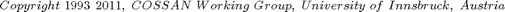
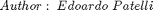

Contents
- TutorialBridgeModel
- Define Input factors
- Beams geometry: heights
- Beams geometry: E modulus
- Beams geometry: length
- Supports: stiffness
- Supports: rotation stiffness
- Supports: damping
- Load
- Create a Input object
- Create the Evaluator
- Preparation of the Physical Model
- Perform deterministic analysis
- Uncertainty Quantification
- Global Sensitivity Analysis
TutorialBridgeModel
In this tutorial the global sensitivity analysis is applied to a practical problem in structural engineering: a mechanical model of a long bridge.
The conceptual model is sketched below.
| L
|
w_1 E_1 h_1 w_2 E_2 h_2 v w_20 E_20 h_20 w_21
@=============@=============@==========@ .... @================@
| | | | | | | | | | | |
k_1 z u c_1 z u z u z u z u k_21 z u c_21
| | | | | | | | | | | |
--- <-------> --- <-------> --- --- --- <----------> ---
/// l_1 /// l_2 /// /// /// l_20 ///Legend:
- w_i = supportRotational stiffness (i=1-21)
- k_i = support stiffness (i=1-21)
- c_i = support damping (i=1-21)
- h_i = beam height (i=1-20)
- l_i = beam lenth (i=1-20)
- E_i = beam E modulus (i=1-20)
- L = Load
This model is interesting for several reasons, which makes it suitable for an example application of the total sensitivity analysis and their upper bounds. The conceptual model contains 123 uncertain parameters. All the uncertain parameters are considered to be uncorrelated.
The bridge is subjected to a harmonic load with a frequency of 10 Hz, applied at the mid point of the 3rd bay. The aim of the analysis is to identify the parameters that affect the variance of the maximum displacement of any points of the bridge as well as the parameters that have negligible effects.
It is important to note, that in order to avoid unrealistic values of the input parameters during the simulation, truncated normal distributions are used.
See Also http://mechanik.uibk.ac.at/wiki/index.php/BridgeModel
 
% Reset the random number generator in order to obtain always the same results. % DO NOT CHANGE THE VALUES OF THE SEED CossanX.resetRandomNumberGenerator(46354)
Define Input factors
It is necessary to define 124 random variables that are grouped into 3 random variable sets. It is not necessary to group the Random variables in different sets because they are not correlated. However, it is convenient for the definition of indipendent identical distributed random variables
Beams geometry: heights
h=RandomVariable('Sdistribution','normal','mean',0.001,'cov',0.05,'lowerBound',0); hSet=RandomVariableSet('Xrv',h,'Nrviid',20); % Please note that the random variables in the randomvariables set are named h_1 % to h_20 disp(hSet.Cmembers)
Columns 1 through 11
'h_1' 'h_2' 'h_3' 'h_4' 'h_5' 'h_6' 'h_7' 'h_8' 'h_9' 'h_10' 'h_11'
Columns 12 through 20
'h_12' 'h_13' 'h_14' 'h_15' 'h_16' 'h_17' 'h_18' 'h_19' 'h_20'
Beams geometry: E modulus
E=RandomVariable('Sdistribution','normal','mean',210e9,'cov',0.03,'lowerBound',0); ESet=RandomVariableSet('Xrv',E,'Nrviid',20); % Please note that the random variables in the random variables set are named E_1 % to E_20 disp(ESet.Cmembers)
Columns 1 through 11
'E_1' 'E_2' 'E_3' 'E_4' 'E_5' 'E_6' 'E_7' 'E_8' 'E_9' 'E_10' 'E_11'
Columns 12 through 20
'E_12' 'E_13' 'E_14' 'E_15' 'E_16' 'E_17' 'E_18' 'E_19' 'E_20'
Beams geometry: length
l=RandomVariable('Sdistribution','normal','mean',0.36,'cov',0.05,'lowerBound',0); lSet=RandomVariableSet('Xrv',l,'Nrviid',20); % Please note that the random variables in the random variables set are named l_1 % to l_20 disp(lSet.Cmembers)
Columns 1 through 11
'l_1' 'l_2' 'l_3' 'l_4' 'l_5' 'l_6' 'l_7' 'l_8' 'l_9' 'l_10' 'l_11'
Columns 12 through 20
'l_12' 'l_13' 'l_14' 'l_15' 'l_16' 'l_17' 'l_18' 'l_19' 'l_20'
Supports: stiffness
k=RandomVariable('Sdistribution','normal','mean',200,'cov',0.10,'lowerBound',0); kSet=RandomVariableSet('Xrv',k,'Nrviid',21); % Please note that the random variables in the random variables set are named k_1 % to k_21 disp(kSet.Cmembers)
Columns 1 through 11
'k_1' 'k_2' 'k_3' 'k_4' 'k_5' 'k_6' 'k_7' 'k_8' 'k_9' 'k_10' 'k_11'
Columns 12 through 21
'k_12' 'k_13' 'k_14' 'k_15' 'k_16' 'k_17' 'k_18' 'k_19' 'k_20' 'k_21'
Supports: rotation stiffness
w=RandomVariable('Sdistribution','normal','mean',40,'cov',0.16,'lowerBound',0); wSet=RandomVariableSet('Xrv',w,'Nrviid',21); % Please note that the random variables in the random variables set are named w_1 % to w_21 disp(kSet.Cmembers)
Columns 1 through 11
'k_1' 'k_2' 'k_3' 'k_4' 'k_5' 'k_6' 'k_7' 'k_8' 'k_9' 'k_10' 'k_11'
Columns 12 through 21
'k_12' 'k_13' 'k_14' 'k_15' 'k_16' 'k_17' 'k_18' 'k_19' 'k_20' 'k_21'
Supports: damping
c=RandomVariable('Sdistribution','normal','mean',0.4,'cov',0.25,'lowerBound',0); cSet=RandomVariableSet('Xrv',c,'Nrviid',21); % Please note that the random variables in the random variables set are named c_1 % to c_21 disp(cSet.Cmembers)
Columns 1 through 11
'c_1' 'c_2' 'c_3' 'c_4' 'c_5' 'c_6' 'c_7' 'c_8' 'c_9' 'c_10' 'c_11'
Columns 12 through 21
'c_12' 'c_13' 'c_14' 'c_15' 'c_16' 'c_17' 'c_18' 'c_19' 'c_20' 'c_21'
Load
load=Parameter('Sdescription','Harmonic load frequence (Hz)','value',10); rho=Parameter('Sdescription','material density','value',7800); width=Parameter('Sdescription','BeanWidth','value',0.04);
Create a Input object
Xinput=Input('CXmembers',{hSet lSet ESet kSet wSet cSet load rho width},... 'CSmembers',{'hSet' 'lSet' 'ESet' 'kSet' 'wSet' 'cSet' 'load' 'rho' 'width'},... 'Sdescription','Input object for Bridge Model Tutorial'); % Show the input object display(Xinput)
=================================================================== Input Object - Description: Input object for Bridge Model Tutorial =================================================================== * 6 Sets of RandomVariables ** Names: "hSet" "lSet" "ESet" "kSet" "wSet" "cSet" * 3 Parameter object(s) ** Names: "load" "rho" "width"
Create the Evaluator
The mathematical model of the bridge is implemented in a matlab function. Hence, an object of type Mio is required to connect the solver with COSSAN-X.
% Use of a matlab script to compute the maximum displacement of the bridge Sfolder=fileparts(which('TutorialBridgeModel.m'));% returns the current folder Xmio=Mio('Spath',Sfolder,'Sfile','bridgeModel.m',... 'Liomatrix',true, ... % This flag specify the type of I/O 'Liostructure',false,... 'Cinputnames',Xinput.Cnames, ... 'Coutputnames',{'maxDisplacement'}); % Add the MIO object to an Evaluator object Xevaluator=Evaluator('CXmembers',{Xmio},'CSmembers',{'Xmio'});
Preparation of the Physical Model
Define the Physical Model
XmodelBridge=Model('Xinput',Xinput,'Xevaluator',Xevaluator); display(XmodelBridge)
=================================================================== Model Object - Description: =================================================================== Required Inputs : h_1; h_2; h_3; h_4; h_5; h_6; h_7; h_8; h_9; h_10; h_11; h_12; h_13; h_14; h_15; h_16; h_17; h_18; h_19; h_20; l_1; l_2; l_3; l_4; l_5; l_6; l_7; l_8; l_9; l_10; l_11; l_12; l_13; l_14; l_15; l_16; l_17; l_18; l_19; l_20; E_1; E_2; E_3; E_4; E_5; E_6; E_7; E_8; E_9; E_10; E_11; E_12; E_13; E_14; E_15; E_16; E_17; E_18; E_19; E_20; k_1; k_2; k_3; k_4; k_5; k_6; k_7; k_8; k_9; k_10; k_11; k_12; k_13; k_14; k_15; k_16; k_17; k_18; k_19; k_20; k_21; w_1; w_2; w_3; w_4; w_5; w_6; w_7; w_8; w_9; w_10; w_11; w_12; w_13; w_14; w_15; w_16; w_17; w_18; w_19; w_20; w_21; c_1; c_2; c_3; c_4; c_5; c_6; c_7; c_8; c_9; c_10; c_11; c_12; c_13; c_14; c_15; c_16; c_17; c_18; c_19; c_20; c_21; load; rho; width; Provided Outputs : maxDisplacement; The Model contains 1 solvers
Perform deterministic analysis
Xout=XmodelBridge.deterministicAnalysis; NominalDisplacement=Xout.getValues('Sname','maxDisplacement'); % Validate Solution assert(abs(NominalDisplacement-4.05230e-03)<1e-6,... 'CossanX:Tutorials:TutorialBridgeModel', ... 'Nominal sulution does not match Reference Solution.')
[Status:Evaluator ] * Processing solver 1/1 [Simulation:exportResults] Writing partial results (SimulationData_Deterministic_Analysis) on the folder: /home/ep/workspace/COSSAN-X_SVN/COSSANXengine/examples/Tutorials/BridgeModel/20110527T195359 [Simulation:exportResults] Batch #0 written in 0.26169 [Simulation:exportResults] Results stored in the folder: /home/ep/workspace/COSSAN-X_SVN/COSSANXengine/examples/Tutorials/BridgeModel/20110527T195359/SimulationData_Deterministic_Analysis
Uncertainty Quantification
The reliaility analysis is performed by the following tutorial See Also: TutorialBridgeModelUncertaintyQuantification.html
% echodemo TutorialBridgeModelUncertaintyQuantification
Global Sensitivity Analysis
This tutorial continues with the optimization section See Also: TutorialBridgeModelGlobalSensitivityAnalysis.html
% echodemo TutorialBridgeModelGlobalSensitivityAnalysis